4．代数的射影几何学
在综合几何学家们发展射影几何学的同时，代数几何学家们沿用自己的方法也研究这同一个学科。新的代数概念中最早的是现在所称的齐次坐标。方案之一是默比乌斯（1790—1868）创立的，他像高斯和哈密顿（William R．Hamilton）一样，是一个天文学家，但是他把大量的时间用于数学。虽然默比乌斯没有参加综合方法与代数方法之争，但他的贡献却是在代数方面。
他用坐标表示平面上的点的方案，发表在他的主要著作《重心计算》(22)中。他从一个固定的三角形出发，对这平面的任一点P，考虑在三角形的三个顶点上各放多少质量能使这三个质量的重心在P，就取这三个量作为P的坐标。当P在这三角形外面时，坐标之一或之二可以是负的。当这三个质量乘以同一个常数时P仍是重心。所以在默比乌斯的方案中，点的坐标不是唯一的；三个坐标之比才是确定的。这个方案用于空间的点时需要四个坐标。在这个坐标系里写出的曲线和曲面的方程是齐次的，即所有各项的次数都相同。稍后我们就会看到运用齐次坐标的例子。
默比乌斯把从平面到平面或从空间到空间的变换分成类型。如果对应的图形相等，变换就是叠合变换；如果对应的图形相似，变换就是相似变换。再普遍一些的是保持平行性但不保持长度和形状的变换，这类型称为仿射变换（欧拉引进的一个概念）。最普遍的是把直线变成直线的变换，他把它叫做直射变换。默比乌斯在《重心计算》中证明每个直射变换是一个射影变换；就是说，它能从一连串透视变换得出。他的证明假定变换是一对一而且连续的，但是连续性条件能够减弱。他还给出这种变换的一种解析表达式。默比乌斯指出，可以在上述的每一类型变换下考虑图形的不变性质。
默比乌斯在几何里不仅对线段而且对面积和体积，引进了带正负号的元素。因此对于在同一线上四点的带正负号的交比这一概念他能给出完善的处理。他还指出，线束中四条线的交比可以用顶点P处各角（图35.11）的正弦表示为
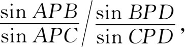
并且这个比值与任何斜截线所截得的四点A，B，C，D的交比是相同的。所以交比在投射与截影下不改变。默比乌斯还缓慢地发展出许多别的观念，然而没有推进得很远。
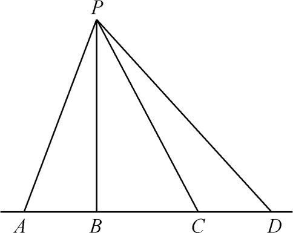
图35.11
赋予射影几何的代数方法以效率和活力的人是普吕克（1801—1868）。在好几所学校当数学教授之后，1836年起，他一直是波恩的数学与物理学教授。普吕克主要是一个物理学家，其实是一个实验物理学家，在那个领域里有许多有名的发现。1863年以后，他重新献身于数学。
普吕克也引进了齐次坐标，但与默比乌斯的方式不同。他的第一个概念是三线坐标(23)，也见于他的《解析几何的发展》（Analytisch-geometrische Entwickelungen，1828，1831）的第二卷。他从一个固定的三角形出发，任一点P的坐标取为从P到该三角形各边的带正负号的垂直距离；各距离可以乘以同一个常数。后来在第二卷里他引进一个特殊情况，相当于把三角形的一条边看成无穷远直线。这等价于把通常笛卡儿坐标x和y换成x＝x1/x3和y＝x2/x3，因而曲线的方程变得对x1，x2，x3为齐次的。后面这个概念是后来较广泛地采用的。
利用齐次坐标，并且利用关于齐次函数的欧拉定理，即若
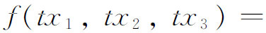
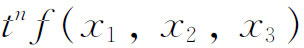
，则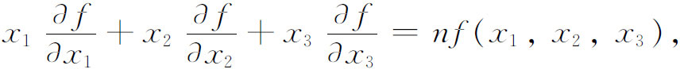
普吕克能够给几何观念以优美的代数表示。例如若f（x1，x2，x3）＝0是一个圆锥曲线的方程，其中（x1，x2，x3）是这圆锥曲线上的点的坐标，那么方程
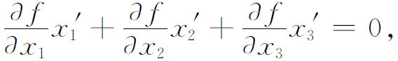
当把
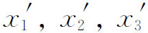
看成流动坐标时，可以解释为点（x1，x2，x3）处的切线方程，而当把x1，x2，x3看成流动坐标时，则是任意点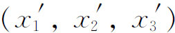
相对于该圆锥曲线的极线的方程。利用齐次坐标，普吕克给出了无穷远线、圆上无穷远点及其他概念的代数表述。在齐次坐标系（x1，x2，x3）中，无穷远线的方程是x3＝0。这条线在射影几何里并不是异常的，但是在我们关于几何元素的直观模型中，欧几里得平面的每个寻常点落在一个有穷位置上，由
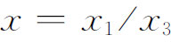
与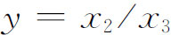
确定，因而我们不得不把x3＝0上的点看成无穷远的。在通过
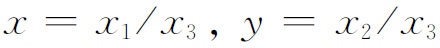
引进齐次笛卡儿坐标x1，x2，x3之后，圆的方程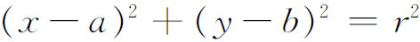
变成
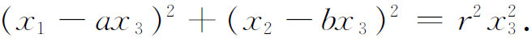
由于无穷远线的方程是x3＝0，所以这条线与圆的交点由
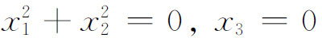
确定，而这乃是圆上无穷远点的方程。这些点的坐标是（1，i，0）和（1，－i，0），或者是正比于它们的三个数。类似地，球面上的无穷远圆的方程是
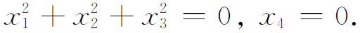
如果我们把直线方程写成齐次形式（我们用x，y，z代替x1，x2，x3）
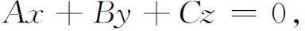
并且要求该线通过点
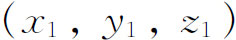
和（1，i，0），那么所得的该线的非齐次方程是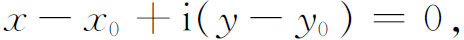
其中
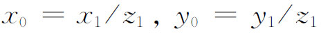
。同样，通过（x1，y1，z1）和（1，－i，0）的线的方程是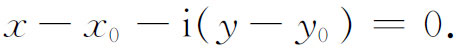
这两条线都与自身相垂直，因为斜率等于其负倒数。李（Sophus Lie）称它们为飘渺线；现在称为迷向线。
普吕克从代数上处理对偶性的努力使他得到一个漂亮的观念——线坐标(24)。如果一条直线在齐次坐标中的方程是
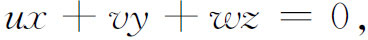
u，v，w或与它们成比例的三个数就是这条线的坐标(25)。于是正像方程f（x1，x2，x3）＝0表示一些点的集体那样，f（u，v，w）＝0表示一些线的集体，或者一个线曲线。
用这种线坐标的概念，普吕克就能给对偶原理一个代数的表述和证明。给定任一方程
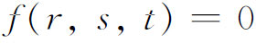
，如果把r，s，t解释为点的齐次坐标x1，x2，x3，我们就得到一个点曲线的方程；如果把它们解释为u，v，w，我们就得出对偶的线曲线。用代数的过程证明的关于点曲线的任何一个性质都引出关于线曲线的对偶的性质，因为在变量的两种解释下，代数是相同的。普吕克在这1830年的第二篇文章和他的《发展》第二卷中还指出，看作点的集合的一条曲线同时也能看成这曲线的切线的集合，因为这些切线也像那些点一样确定了曲线的形状。切线族是一条线曲线，在线坐标里有一个方程。这个方程的次数叫做曲线的类数，而曲线在点坐标里的方程的次数叫做曲线的阶数。